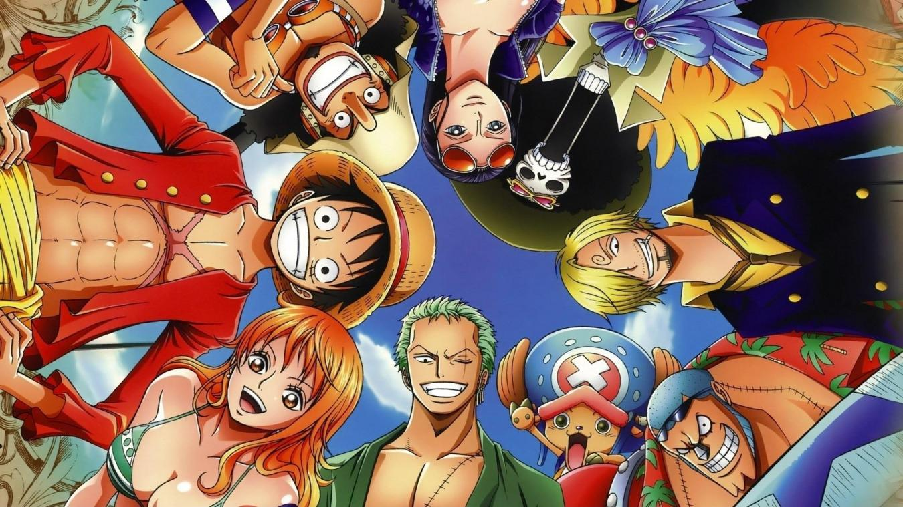

J'aime énormément écouter de la musique durant mon temps libre ! J'écoute énormément de rap ! Les artistes que j'aime particulièrement dans ce domaine sont Ninho, Maes,Soprano, Kery James, Orelsan, Damso, Maitre Gims et la Sexion d'Assaut d'avant. Mais j'aime aussi particulièrement d'autres artistes qui sont plus dans la pop comme Stromae. Le rap US me plait aussi énormément. Il y a des artistes comme 50cent, Eminem, Wiz Khalifa que j'écoute énormément. Mais aussi des groupes de chanteurs américains comme les Imagin Dragons ou encore Twenty One Pilots.
TITRES PREFERES
N°1
Maes- Street
N°2
Dosseh-L'odeur du charbon(feat. Maes)
N°3
Maes-Prioritaire
N°4
Maes-Dybala feat. JUL
Le football
J'aime énormément regarder et jouer au football. J'aime particulièrement Mohamed Salah qui est égyptien comme moi et qui joue à Liverpool. De mon côté, quand je peux, on organise un match de football entre amis. Mes points forts : la vitesse, le double-contact, les feintes, et les frappes enroulées. Quand j'étais petit, j'ai fait un an au club de Bobigny, mais je n'étais pas très fort. Je vous propose de mettre dans un tableau maintenant mon onze de rêve des meilleurs joueurs de tous les temps dans une formation en 4-3-3.
MON ONZE DE REVE
Gardien
Gianluigi Buffon
Défenseur Gauche
Roberto Carlos
Défenseur Droit
Dani Alves
Défenseurs centraux
Virgil Van Djik et Giorgio Chiellini
Milieux centraux
Andrès Iniesta et Andréa Pirlo
Milieu offensif central
Zinédine Zidane
Ailier gauche
Cristiano Ronaldo
Ailier droit
Lionel Messi
Buteur
Ronaldo R9
Les animés

J'aime énormément regarder des animés durant mon temps libre. Dernièrement, j'ai regardé Death Note, Dragon ball, Dragon Ball Z, Dragon Ball Super et enfin le plus long mais le meilleur : One piece. Je trouve les animés magnifiques et parfois des valeurs humaines sont mises en valeur comme l'amitié, l'amour, la fidélité, l'entraide, la solidarité, la confiance etc...